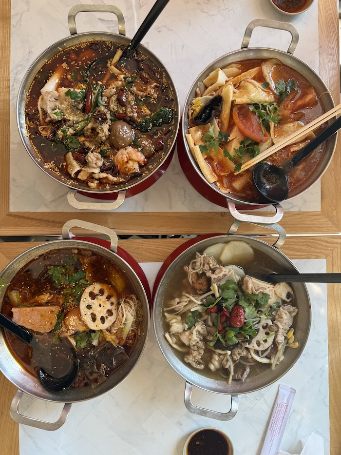

a short guide for choosing malatang ingredients
Malatang is a customizable Chinese soup dish where you choose your own ingredients. The Chinese name (麻辣烫) translates to "numbing spicy hot", and is derived from the main ingredient, mala, a seasoning made from Sichuan peppercorns and dried chili.
If you're familiar with hot pot, malatang has a similar concept. Like hot pot, you choose your own ingredients and cook it in a soup. However, malatang is served as a single portion, making it suitable to eat by yourself, rather than with a large group.
The ordering process for malatang for the first time can be daunting, as there are many options for ingredients. Most restauraunts follow these steps:
Picking vegetables, meats, etc. from the containers and placing them in your tray
Restaurants often use a price system based on weight, where ingredients are weight on a scale and priced per gram. Some restaurants however use a set-price system, with a fixed number of items instead.
Selecting a soup type, and preferred spice level
The bowl will then be cooked for you. You can also add any toppings/condiments to your liking!

One of the most essential ingredients to choose are the vegetables. Being low in calories, and the main source of fiber and vitamins, choosing the right amount and type of vegetables is key to building a balanced bowl. Your selection may differ slightly based on where you are choosing your ingredients, however there are a few classic vegetables that are offered at most places.
Below is a table with some classic vegetables and their benefits to the bowl:
| Name | Benefits | Texture | Recommended Amount |
|---|---|---|---|
| Napa Cabbage | Adds natural sweetness, which can help soften spiciness from the broth | Leafy, somewhat firm | 1-2 bundles |
| Potatoes | Releases starch, which allows for broth to cling to other ingredients like noodles & leafy greens | Softer, starchy | 2-3 Slices |
| Enoki Mushrooms | Soaks up the broth like a sponge, making it very flavorful | Chewy, springy | 1-2 bundles |
| Lotus Root | Balances softer vegetables with a crunchy texture | Crunchy, more firm | 2-3 pieces |
The meat/protein ingredients of a malatang bowl can be some of the most defining ingredients to choose from. This is because the type of meat you choose can also influence which other ingredients pair well with it, whether you want something lighter to balance out a richer meat or ingredients that complement its flavor and texture.
A few choices you may see are:
| Name | Traits |
|---|---|
| Beef (Thin-sliced) | cooks quickly, and absorbs broth well. (slightly fatty) |
| Pork | slightly fattier and sweeter than beef, pairs well with tofu |
| Lamb | stronger and often gamier taste, suits bowls with bolder/spicy flavors |
| Chicken | lighter, allows for vegetables and broth to stand out without a strong meat flavor |
| Fish/Seafood | more delicate and sometimes slightly sweet, suits a more mild broth |
The key points for choosing noodles are texture and how well they absorb the broth.
Some choices may be:
| Name | Traits |
|---|---|
| Glass Noodles | chewy, springy, soaks up broth |
| Potato Noodles | thicker, very chewy (suits more hearty bowls) |
| Rice Noodles | softer, smooth (suits lighter bowls) |
| Wheat Noodles | soft and bouncy (suits a more substantial bowl) |
Lastly, your soup base determines what the predominant flavor of your bowl will be. While a traditional mala 🌶️ base would give you a classic spicy and numbing flavor, a lighter tomato 🍅 broth would be more palatable for someone looking for a less intense experience.
Some other options may include:
| Name | Traits |
|---|---|
| Mushroom | lighter, vegetarian friendly |
| Curry | fragrant, slightly sweet (spicy level can depend on the restaurant) |
| Mala xiang guo (麻辣香锅) | a stir-fried, dry dish (translates to spicy fragrant pot) often has an intense flavor due to Sichuan peppers |
To learn more about malatang subscribe to the MEL! (Malatang-mailing-list)